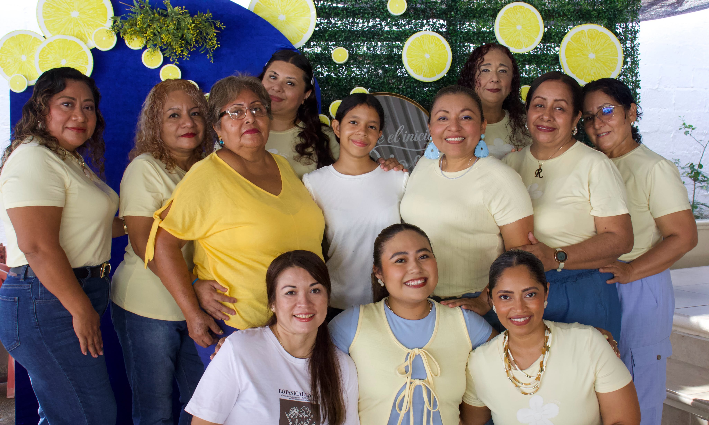
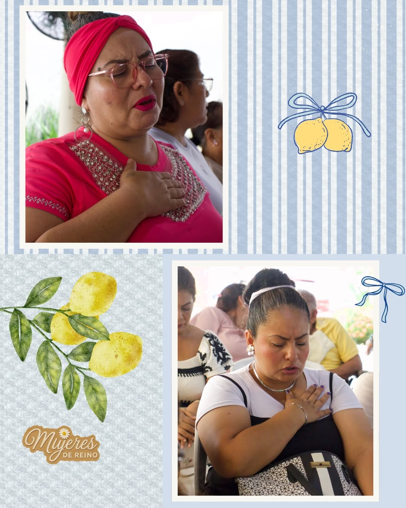
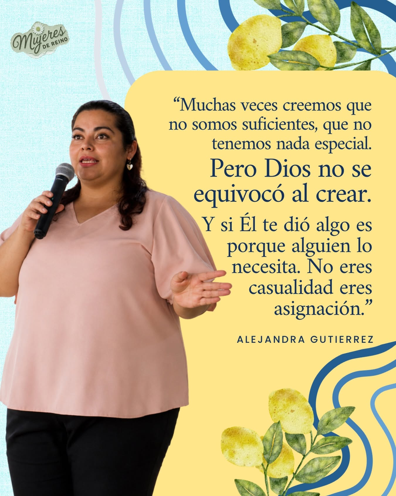
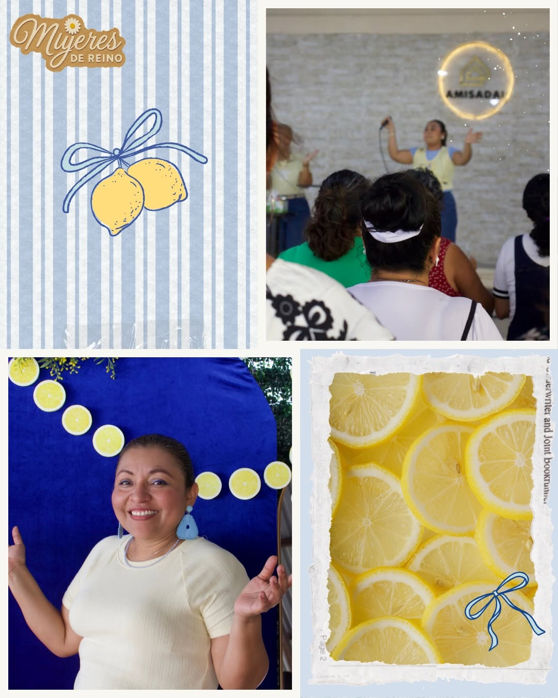
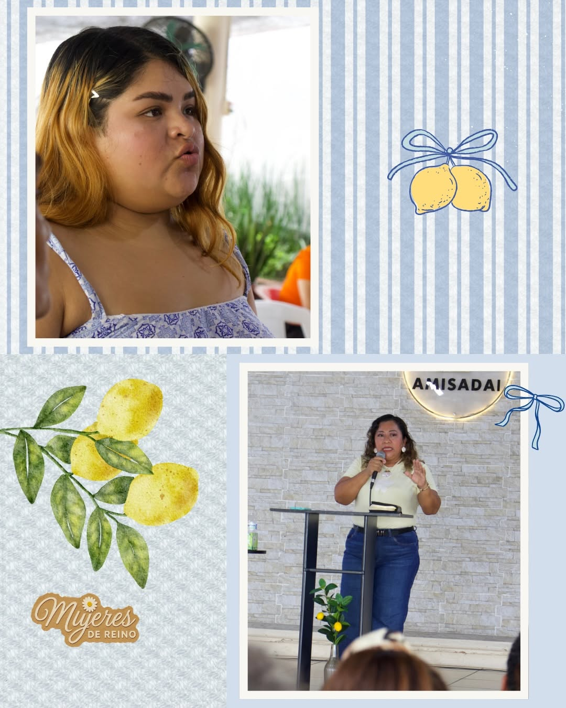

Identidad
Recordar nuestro valor, dones y propósito desde una perspectiva de fe.
Un espacio para crecer en Dios, fortalecer la identidad, compartir experiencias y caminar juntas en cada etapa de la vida.
Conoce el ministerio Quiero participar
Creamos espacios de acompañamiento, enseñanza, oración y convivencia para que cada mujer pueda fortalecer su relación con Dios y con otras mujeres.
Recordar nuestro valor, dones y propósito desde una perspectiva de fe.
Reflexiones y enseñanzas para fortalecer nuestra vida espiritual.
Momentos para buscar a Dios, agradecer y acompañarnos unas a otras.
Amistades, convivencia y apoyo para caminar juntas en cada temporada.
Momentos de oración, convivencia, aprendizaje y crecimiento.




Cada etapa trae desafíos y aprendizajes. Queremos que encuentres aquí un lugar para ser escuchada, animada y fortalecida en tu caminar con Dios.
Tiempo para meditar en la Palabra y fortalecer la fe.
Momentos para conocernos, reír y crear vínculos.
Un espacio para buscar juntas la presencia de Dios.
Ven como eres y forma parte de esta comunidad de mujeres.
Contáctanos